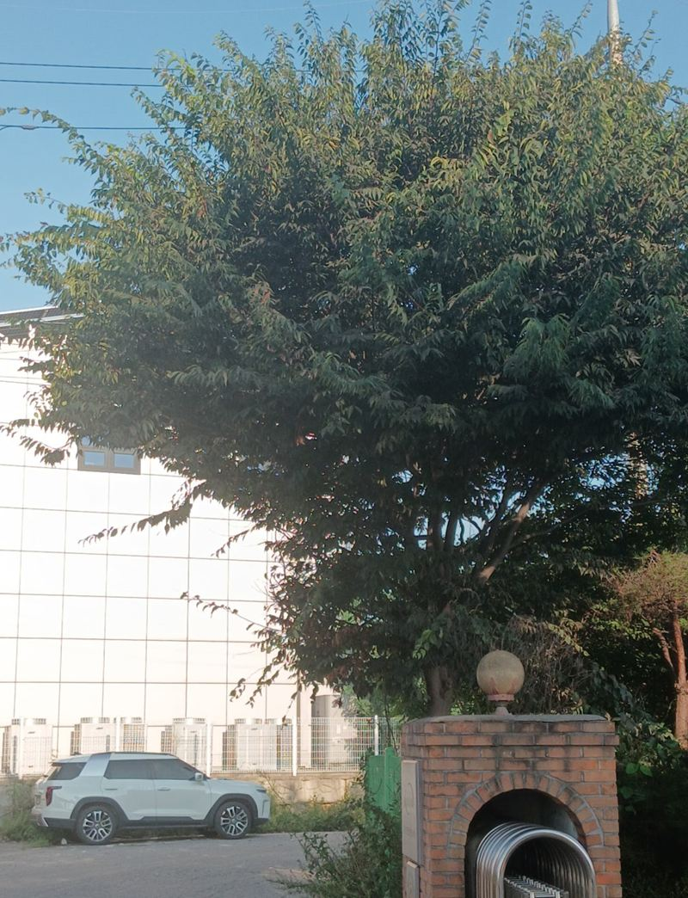
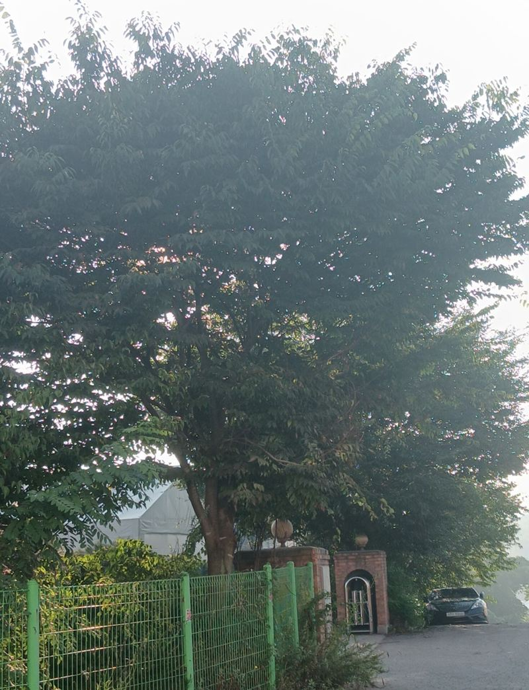
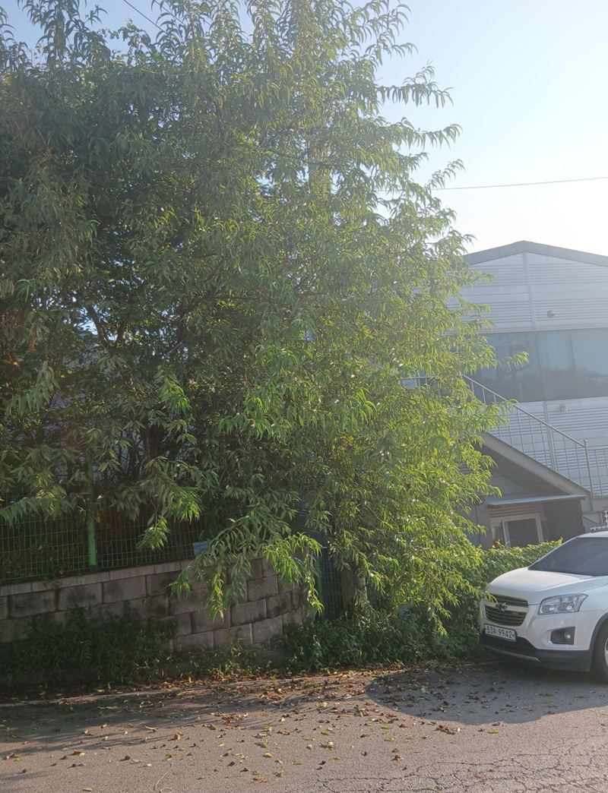
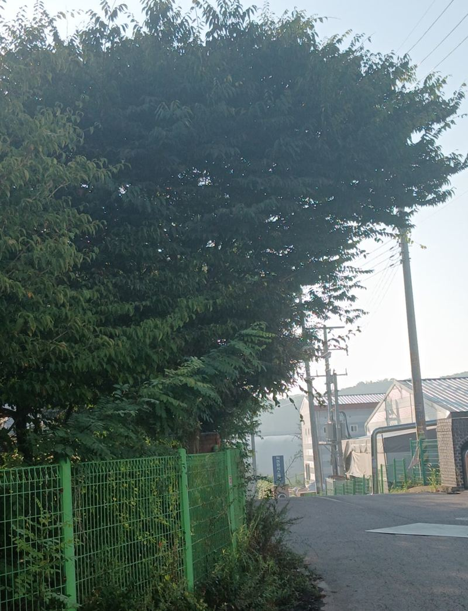
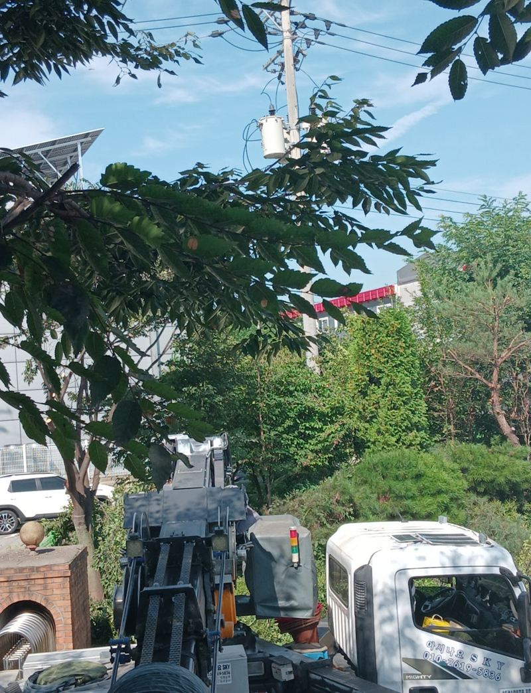
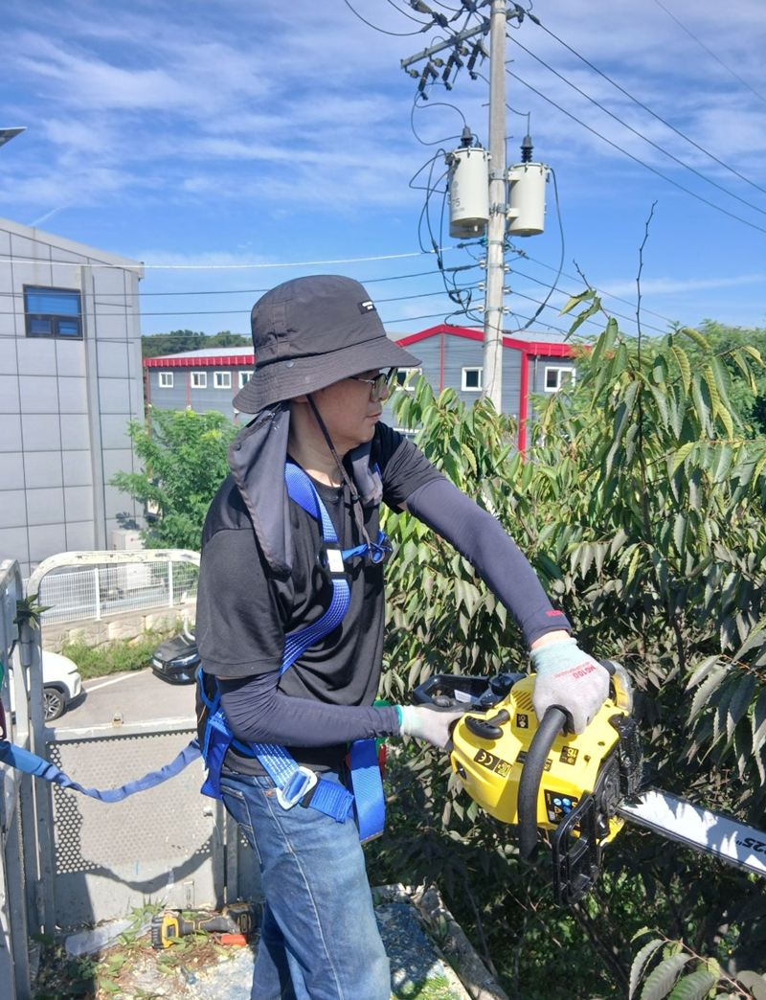
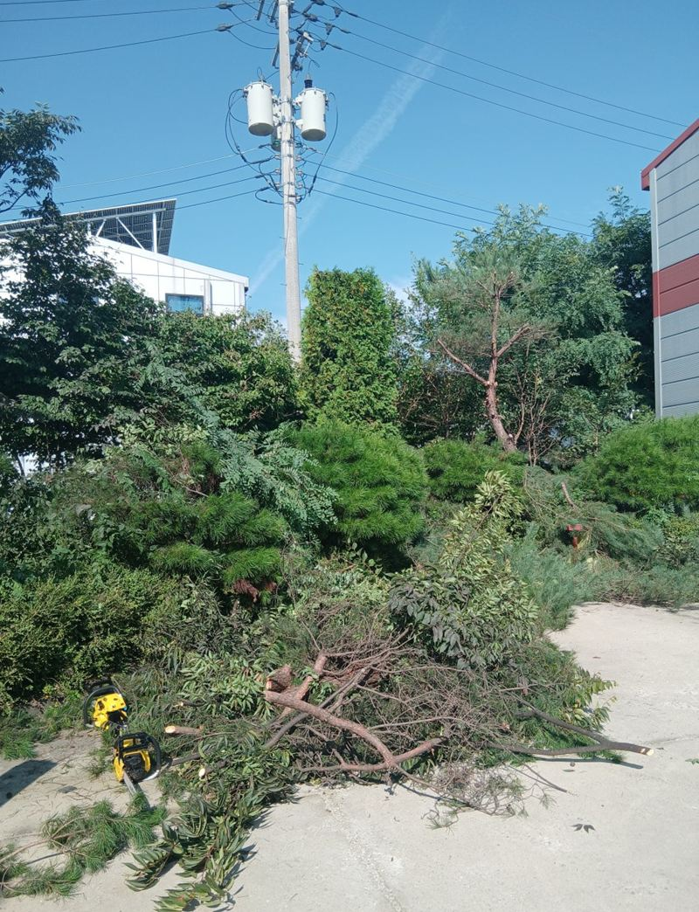

화성 엔진톱 나무 자르기, 가지치기 필요성

 작업 전작업 후
작업 전작업 후← 밀어서 전후 비교 →
"매년 직접 잘랐는데 이제는 장비 없이는 손이 안 닿아요." 공장 둘레 나무가 해마다 높이 자라, 열매 달린 가지가 옆 회사 마당까지 넘어가고 있었어요. 높은 곳은 스카이 장비에 올라 엔진톱으로 정리하고, 아래 화단 풀까지 깎아 마무리했어요.
| 현장 | 화성 장안면 공장 부지 경계 나무 |
|---|---|
| 문제 | 위로 길게 뻗은 가지, 이웃 회사로 넘어가는 열매 가지 |
| 장비 | 스카이 장비, 엔진톱, 예초기 |
| 한 일 | 위험 요소 확인 → 작업 반경 통제 → 굵은 줄기 벌목 → 가지치기 → 화단 예초 |
자르기 전에 확인한 세 가지
- 주변 시설전선, 가로등, 건물 벽이 가지 떨어지는 방향에 있는지 봤어요.
- 작업 반경가지가 떨어지는 범위에 사람과 차가 들어오지 않게 통제했어요.
- 가지 방향어느 쪽으로 넘어갈지 보고 자르는 순서를 정했어요.


높은 가지는 스카이 위에서
사다리로는 닿지 않는 높이라 스카이 장비를 썼어요. 굵은 줄기는 엔진톱으로 위에서 아래로 나눠 자르고, 세부 가지는 장비 위에서 정리했어요. 큰 가지를 한 번에 자르면 무게 때문에 튕기거나 엉뚱한 방향으로 떨어져서, 여러 번 나눠 끊어 내리는 게 안전해요.


잘라 낸 가지는 모아서 정리하고, 화단에 자란 풀은 예초기로 깎아 공장 둘레를 깔끔하게 마무리했어요.


가지치기를 미루면 생기는 일
| 그대로 두면 | 생길 수 있는 문제 |
|---|---|
| 가지가 한쪽으로만 뻗어요 | 무게가 쏠려 태풍 때 부러지거나 쓰러질 위험 |
| 전선·건물에 닿아요 | 정전, 지붕·벽 파손 |
| 이웃 부지로 넘어가요 | 열매·낙엽으로 인한 민원과 분쟁 |
| 햇빛을 가려요 | 건물 습기, 화단 다른 식물 고사 |
이런 나무라면 정리할 때예요
- 담 너머로 가지가 넘어가요열매나 낙엽이 이웃 부지에 떨어지기 시작하면 민원이 생기기 쉬워요. 넘어간 가지부터 정리해요.
- 창문과 간판을 가려요햇빛과 시야를 막는 가지는 건물 쪽으로 자란 것부터 잘라 내요.
- 태풍 뒤 가지가 꺾여 매달려 있어요떨어지면 사람이나 차를 다치게 할 수 있어 바로 정리하는 게 좋아요.
- 해마다 직접 잘랐는데 키가 닿지 않아요사다리 높이를 넘으면 장비와 안전 장구가 필요해요. 무리하지 말고 맡겨 주세요.
나무 자르기 질문
엔진톱 작업, 직접 하면 안 되나요?
높은 곳에서의 엔진톱 작업은 반동과 추락 위험이 커요. 안전 장비와 장비 경험이 있는 작업자에게 맡기시는 게 안전해요.
가지치기 좋은 시기가 있나요?
잎이 나기 전 늦겨울이나 이른 봄이 나무 부담이 적어요. 위험한 가지는 시기와 상관없이 바로 정리하는 게 좋아요.
나무를 아예 베어 낼 수도 있나요?
가능해요. 다만 공공 녹지나 보호수는 허가가 필요할 수 있어 미리 확인해 주세요.
잘라 낸 가지는 어떻게 처리하나요?
양과 현장 여건에 따라 처리 방법이 달라서 상담할 때 함께 정해요.
학교·아파트 단지 나무도 하나요?
네, 공장뿐 아니라 학교, 상가, 아파트 단지 나무도 정리해요. 나무 높이가 보이는 사진을 보내 주세요.
옆 건물로 넘어간 가지도 자를 수 있나요?
경계를 넘어간 가지는 이웃과 미리 이야기해 두시면 작업이 수월해요. 이웃 쪽에서 떨어지는 가지도 정리할 수 있게 동선을 잡아요.
스카이 장비가 들어갈 자리가 없으면요?
장비 진입이 어려운 곳은 사다리와 로프 작업으로 나눠 진행하기도 해요. 현장 사진으로 진입로를 먼저 봐요.
열매 나무는 언제 자르는 게 좋아요?
열매가 다 떨어진 뒤나 늦겨울이 정리하기 좋아요. 이웃 피해가 크면 시기와 상관없이 문제 가지부터 잘라요.
다른 조경·시설물 현장
나무 전체 높이가 보이는 사진과 주변 전선·건물이 나온 사진을 보내 주세요.
전화 상담 010-4517-9872